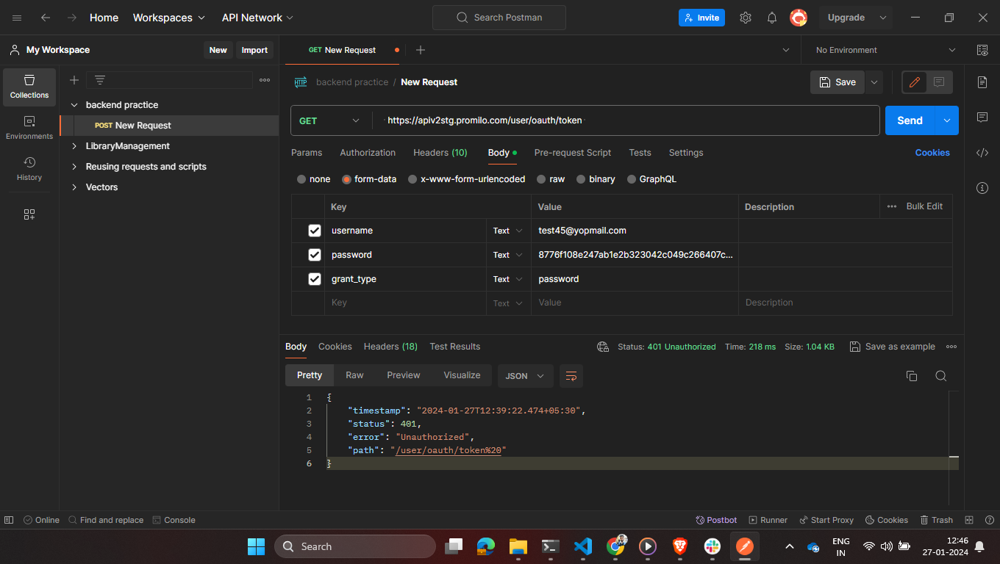

/src
|--/app
|--|--/modules
|--|--|--/auth
|--|--|--|--/login
|--|--|--/products
|--|--|--|--/about
|--|--|--|--/header
|--|--|--|--/product-list
|--|--/services
|--|--|/app-services
1.To run the application system should install node and angular cli
2.Clone the project by using this url and this command git clone {{"{{'url'}}"}}
Note url is https://github.com/Yatheesh23/Promilo-assignment.git
3.open the terminal from project path
4.Do the npm install command is npm i
4.After successfully install npm finally run the project by using command ng s -o
While integrating login iam getting always unautherized error i have tryed multiple ways and iam ensure that i have converted converted into sha256 format before calling Login API so i have implemented by just calling api and by passing dummy accesston because of that not able to secure the routers
I have attached image for your reference below
